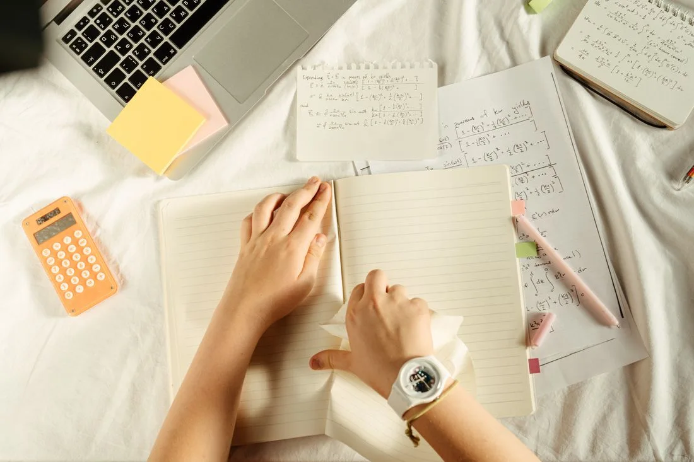

Глава 3 · 6 уроков
Процесс подготовки
Как составить план по предмету, чередовать теорию с практикой и по своим результатам выбирать, что решать дальше.

Глава 3 · 6 уроков
Как составить план по предмету, чередовать теорию с практикой и по своим результатам выбирать, что решать дальше.
